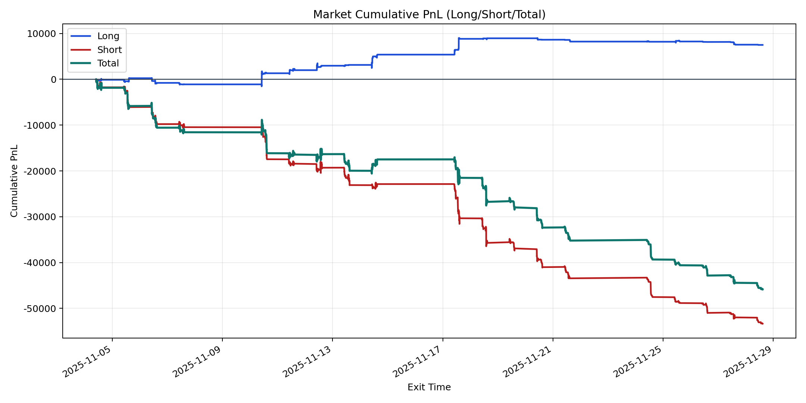
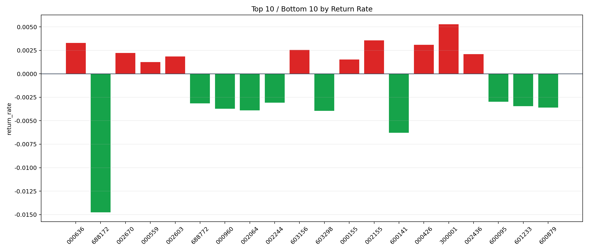

| repo_root | /home/haoranyou/data/output/alpha0.4_1w_5s_3ticks_index_filter/index_weights_500 |
|---|---|
| period_months | 1 |
| period_label | 2025-11-04_to_2025-11-28 |
| start_time | 2025-11-04 09:52:12 |
| end_time | 2025-11-28 14:45:02 |
| n_trades | 5792 |
| n_symbols | 91 |
| total_pnl | -45850.735950000046 |
| long_total_pnl | 7501.699699999974 |
| short_total_pnl | -53352.435650000014 |
| total_entry_notional | 54553576.0 |
| long_entry_notional | 7089665.0 |
| short_entry_notional | 47463911.0 |
| total_return_rate | -0.0008404716851192312 |
| long_return_rate | 0.0010581176543602517 |
| short_return_rate | -0.001124063199301044 |
| top_symbols_by_return | ["300001", "002155", "000636", "000426", "603156", "002670", "002436", "002603", "000155", "000559"] |
| bottom_symbols_by_return | ["688172", "600141", "603298", "002064", "000960", "600879", "601233", "688772", "002244", "600095"] |

